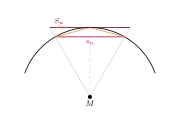

Aufgabe 7.4
Rechnen Sie nun mit Ihrem Taschenrechner bis zum $96$-Eck (Archimedes!) und gewinnen Sie daraus eine untere und obere Abschätzung für $\pi$.
- Nutzen Sie die Rekursionsformeln für die Seitenlängen
- Berechnen Sie schrittweise: 4-Eck → 8-Eck → 16-Eck → ...
- Führen Sie eine Tabelle mit oberen und unteren Schranken
- Beachten Sie die zunehmende Genauigkeit

Im Einheitskreis ($r = 1$) sei $s_n$ die Seite des einbeschriebenen und $S_n$ die des umbeschriebenen $n$-Ecks. Beim Verdoppeln gilt \[s_{2n} = \sqrt{2 - \sqrt{4 - s_n^2}}, \qquad S_{2n} = \frac{2\sqrt{4 + S_n^2} - 4}{S_n}.\] Der halbe Umfang ist $n\cdot\frac{s_n}{2}$ beziehungsweise $n\cdot\frac{S_n}{2}$, und dazwischen liegt $\pi$ (der halbe Umfang des Einheitskreises). Begonnen wird mit $s_6 = 1$ und $S_6 = \frac{2}{\sqrt{3}}$.
| $n$ | $s_n$ | $S_n$ | untere Schranke | obere Schranke |
| $6$ | $1$ | $1.1547$ | $3.0000$ | $3.4641$ |
| $12$ | $0.5176$ | $0.5359$ | $3.1058$ | $3.2154$ |
| $24$ | $0.2611$ | $0.2633$ | $3.1326$ | $3.1597$ |
| $48$ | $0.1308$ | $0.1311$ | $3.1394$ | $3.1461$ |
| $96$ | $0.0654$ | $0.0655$ | $\mathbf{3.1410}$ | $\mathbf{3.1427}$ |
Also $3.1410 < \pi < 3.1427$.
Im Video: Etappe 3 · Archimedische Methode bei 6:41